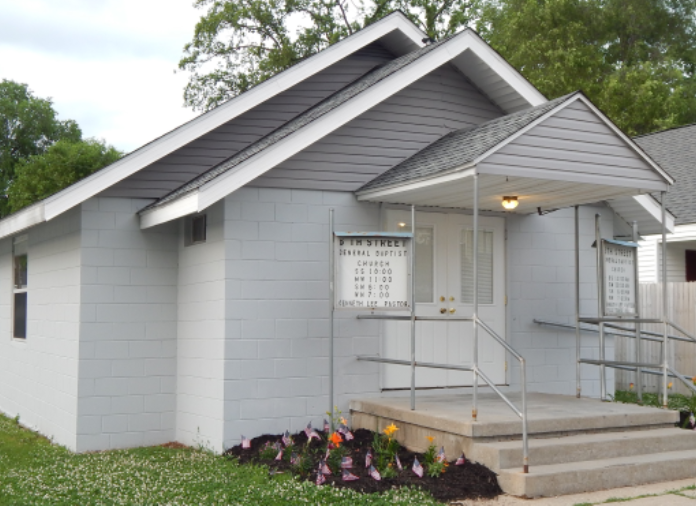

6th Street General Baptist Church
Making deciples for Christ


We’ve heard people say,
“This church is different.” And, we think they’re right!
Come visit us at one of our services to hear some good, old fashioned singing and preaching!
The Pastor of 6th St. General Baptist Church:
Reverend Robert Hensley
Phone #: Available upon request
Services:
- Sunday School......10:00am
- Sunday Morning.....11:00am
- Sunday Evening.....6:00pm
- Wednesday Evening..7:00pm
Event Times can be found under the Calendar section of the site.
Listen to our past services by visiting the Documents page.
2102 6th Street, Columbus, Indiana, 47201.
Click here for directions to the church.
We stand firm on only using the
King James 1611 version of the Bible.